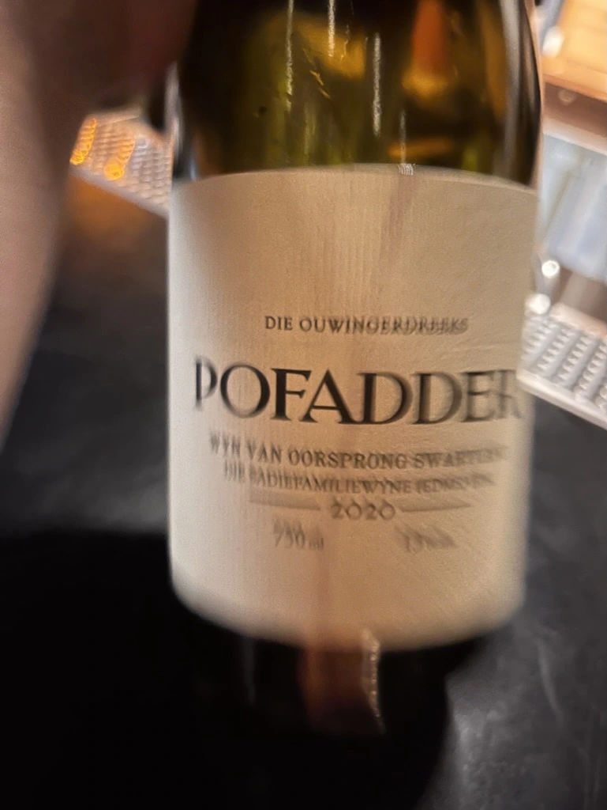
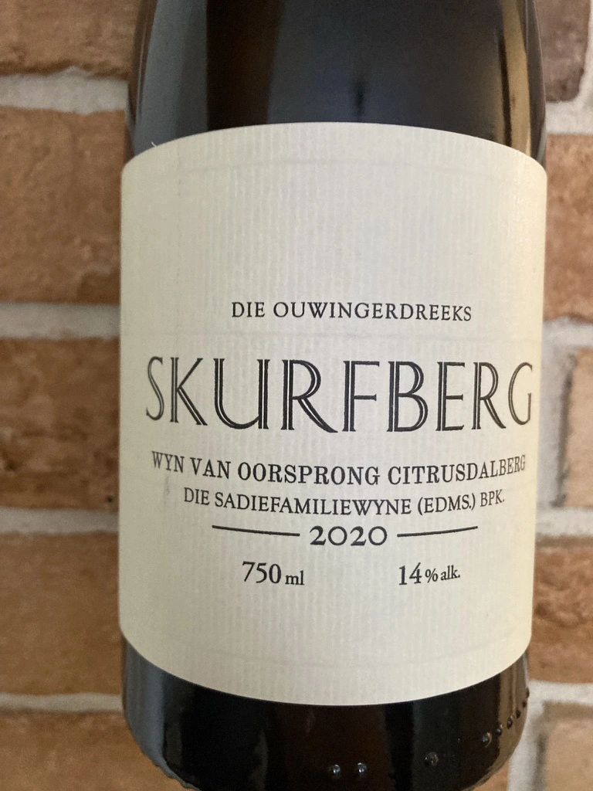
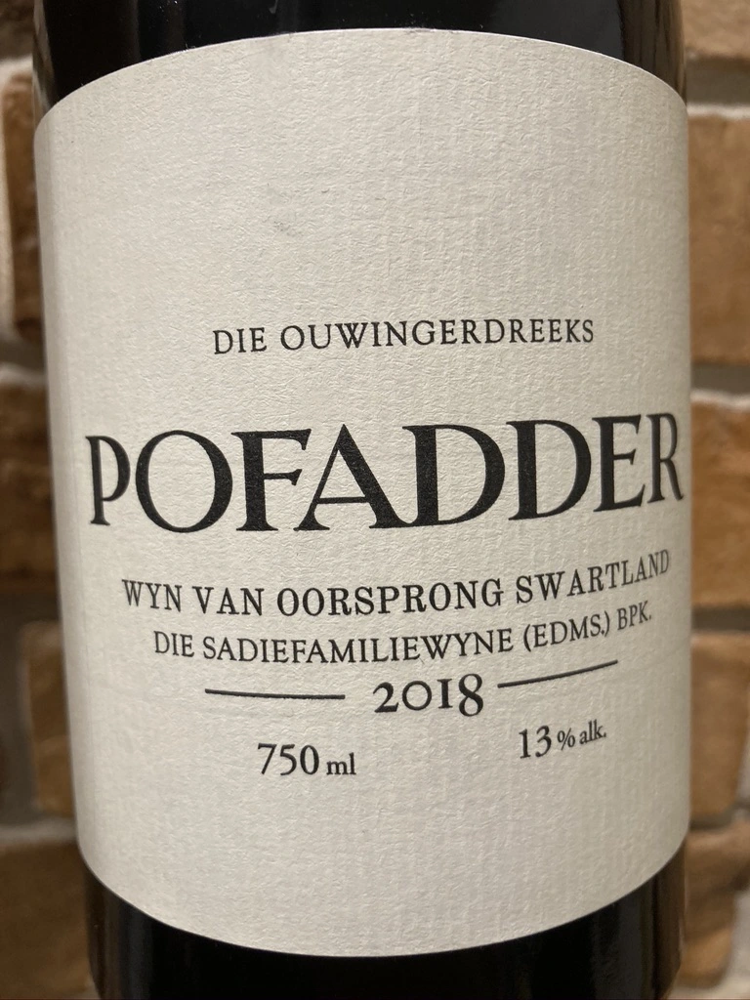
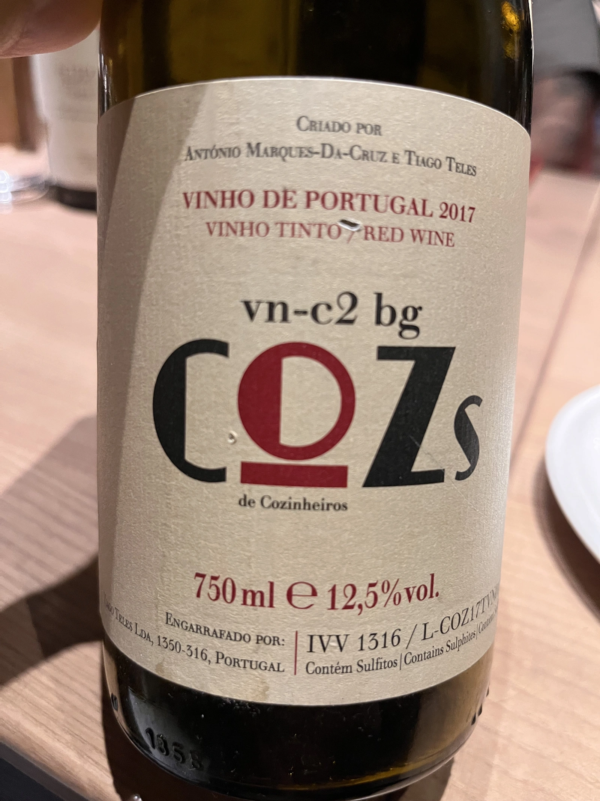
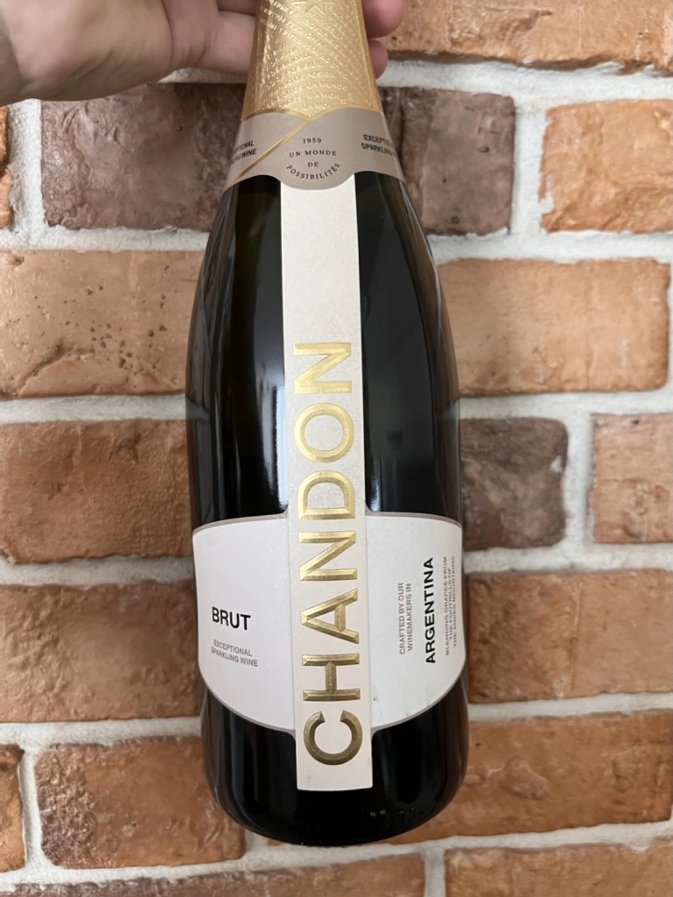
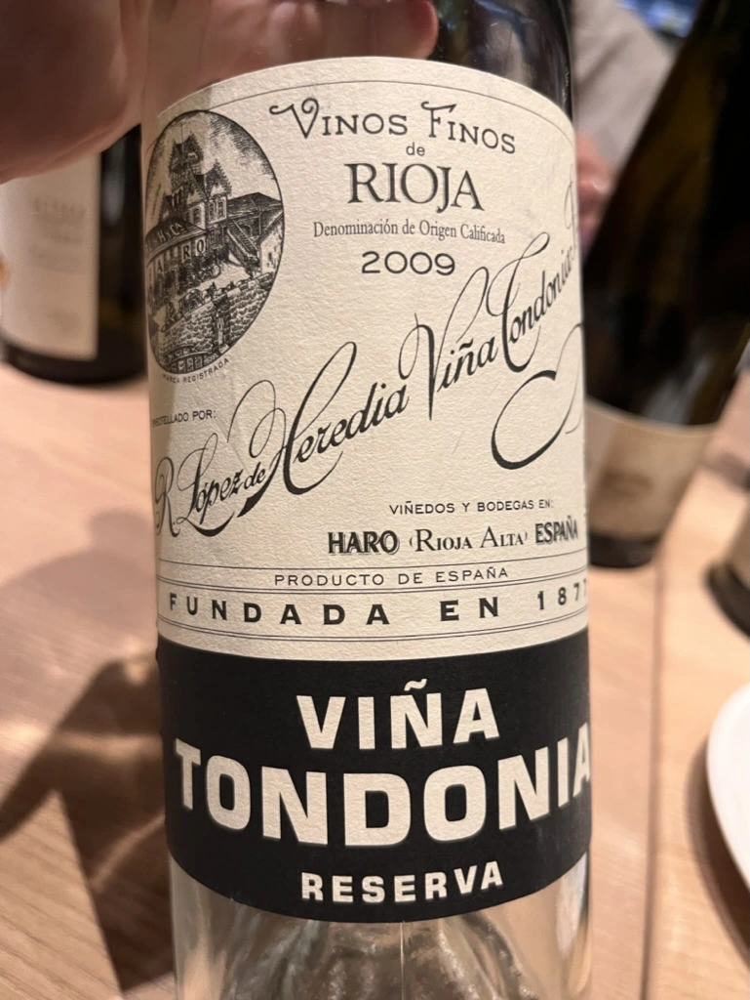
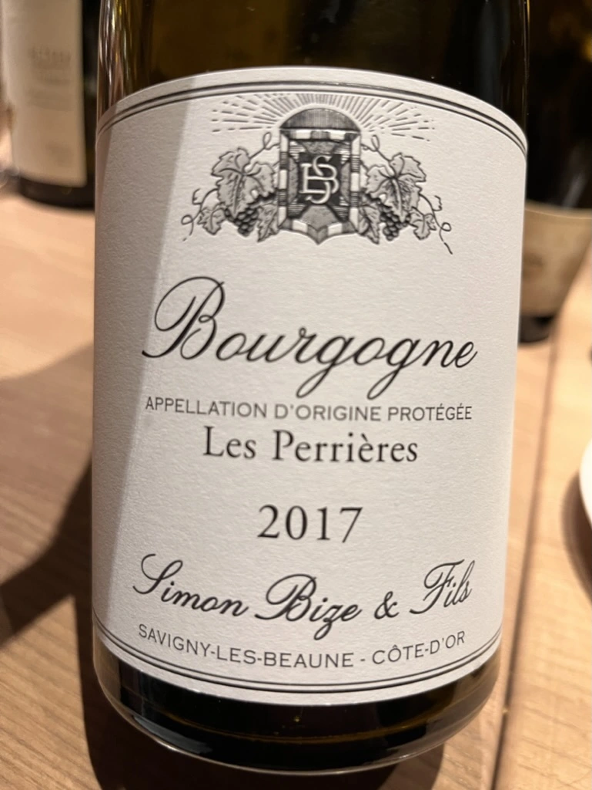
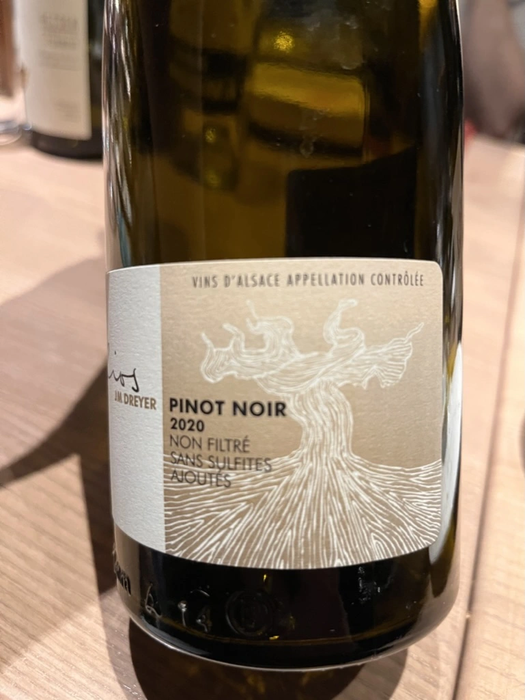

- Type
- Red Still, Dry
- Producer
- Sadie Family
- Vintage
- 2020
- Location
- South Africa, WO Swartland
- Grapes
- Cinsault
- Alcohol
- 13
- Sugar
- 1.4
- Price
- 1619 UAH
- Cellar
- N/A
Ratings
2022-06-07 - 8.50
Amazing wine, one of my favourite producers. Barberry candy, blood, leather, cranberry and flint. Complex, precise with good minerality. It’s not profound, but rather delicate and multilayered. I would drink it every morning and every evening. Alone, without sharing it with anyone :)
Related







